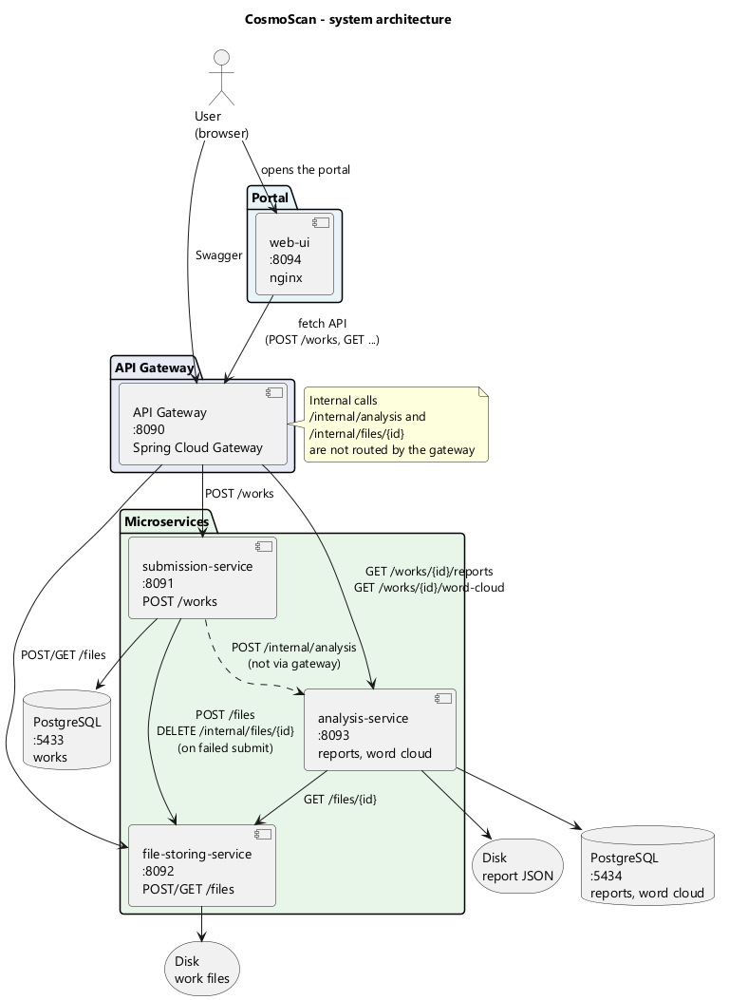
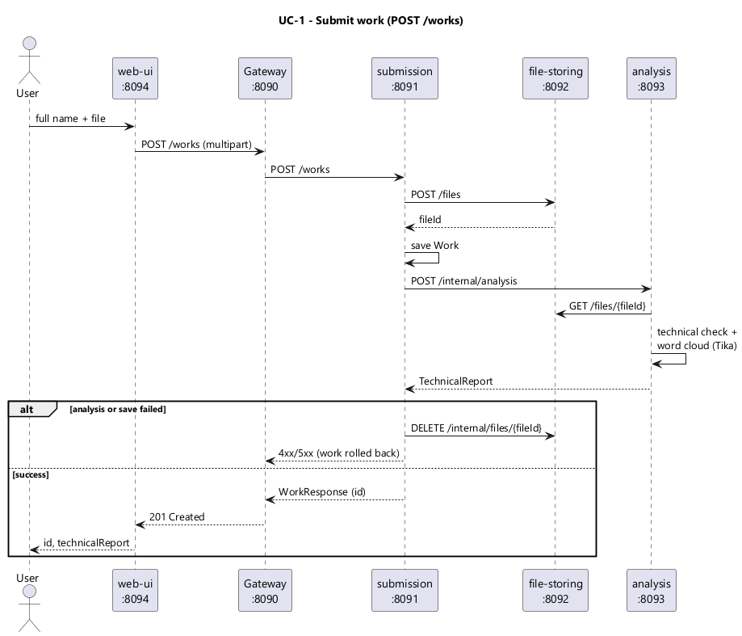

System diagram
CosmoScan is a set of microservices behind an API Gateway. The portal sends requests to the gateway; the services talk to each other inside the internal network.


API connection
The forms below send requests to the API Gateway (see the diagram above).
8090. Change it only for a non-standard deployment.
API documentation (Swagger UI)
Interactive OpenAPI documentation of each microservice, proxied through the gateway.
Health check (Spring Actuator)
Direct links to /actuator/health of the gateway and the backend services.
UC-1 Submit work
A student uploads a file and immediately gets the technical check result. Maps to POST /works.
Server response (JSON)
Submitted works (for testing UC-2 / UC-3)
The list is kept in this browser. Click a row to put its work ID into the fields below.
| Student full name | Work ID | File | Submitted |
|---|
UC-2 Technical reports
A teacher requests the technical check history of a work. GET /works/{workId}/reports.
id). Updated on every new submission or by a click in the table above.
Reports (JSON)
UC-3 Word cloud
Word frequencies of the work text for visualization. The data is prepared on submission (UC-1) and read with GET /works/{workId}/word-cloud.
404.
terms field (text, weight). With status READY the terms are drawn on the canvas below. NO_TEXT / FAILED show a message instead.
Word cloud data (JSON)
Test coverage (JaCoCo)
JaCoCo HTML reports (gate: 100% of instructions, lines and branches). The links point to http://localhost:8094 and need a running web-ui (docker compose up -d --build web-ui).